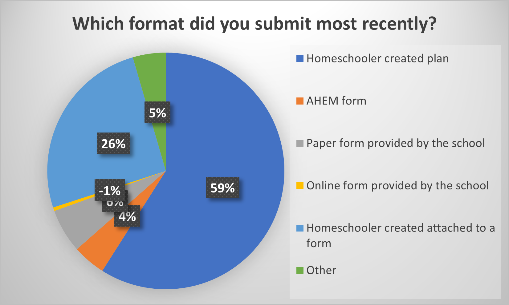
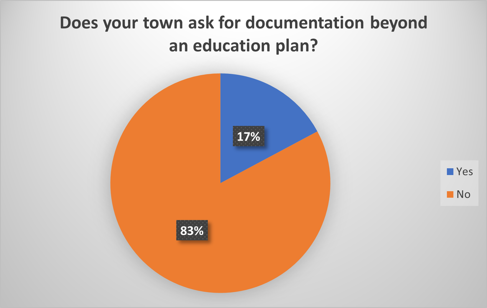

Summary of Education Plan Submission Survey
We set up the survey to collect empirical data about:
- the use of online forms to submit education plans
- the request for documentation beyond an education plan
- the request to register a homeschooled student
We had responses from 200 homeschoolers in 43% of school districts in Massachusetts. Thanks to all who took time out of their day to fill out the survey.
Use of online forms to submit education plans

Schools often use forms as administrative tools in an attempt to standardize information about homeschooled students. Many school districts in Massachusetts have a form to fill out, most often paper, sometimes online.
Despite the prevalence of forms provided by schools, most (59%) of survey respondents ignore the form and submit just a homegrown education plan (may be based on the AHEM sample education plan). Another 26% attach said plan to the town's form, be it online or paper.
Request for documentation beyond an education plan
Historically and according to the Charles decision, in order to homeschool a parent must simply submit an education plan to their local school. Seventeen percent of respondents said their town asks for information beyond an education plan. The most common documentation requested is proof of residency or occupancy, followed by proof of parent's identity and child's birth certificate. This documentation is required to enroll a child in school, but historically has not been required to homeschool in the majority of Massachusetts towns.
Some respondents who previously had children registered in school noted that they had supplied this sort of documentation to the school when enrolling their child in public school, so it was unclear whether or not the school would have requested it in order to approve homeschooling.
Commonly respondents whose towns requested the additional documentation did not provide it and the school did not press them for it.
Request to "register" a homeschooled student
One point that is crystal clear is that homeschoolers are not to be included in the enrolled public school student count. Schools do not receive state funding for homeschooled students.
The "registration" question appears to be a matter of semantics. Over time, and perhaps with the great influx of families choosing to leave the public school system over the last couple of years, the meaning of “registration” has muddied.
If we define "registration" as the process to enroll your child in school, historically homeschoolers have not "registered" but rather submitted an education plan for approval to homeschool. Now it seems that some school personnel and some homeschoolers use "registration" to mean the process of being approved to homeschool. This semantic question, coupled with the request for excessive documentation noted above, creates confusion.
Ten of 200 survey respondents indicated their town asks them to “register” their homeschooler in order to have their education plan approved. Half of those, five respondents, said they understand "registering" to mean “my child(ren) is/are being added to a local database of homeschoolers for administrative purposes.” Only two respondents understand "registering" to mean that the school counts their child(ren) as enrolled in the public school, and in these cases it has not been confirmed that those schools are actually enrolling homeschoolers.
Bottom line
While there may be chatter on social media about these issues, the results of our survey show that much remains the same:
- Most homeschoolers submit their own education plans, either stand alone or attached to a school's form.
- Most do not get asked for any other documentation, and when they do, they either ignore or protest, and end up getting approval without submitting said excessive documentation.
As always it is helpful to remember that schools are giant bureaucracies, and school personnel are often not familiar with homeschool law. Thus it falls to homeschoolers to read up on our rights and responsibilities, and gently educate school personnel.
As one respondent said:
[Families in my district] all quoted case law and proved we gave what was legally required and stated we would amend any issues within the education plan but would not be submitting more than we are legally required. Eventually we all received our approval letter.